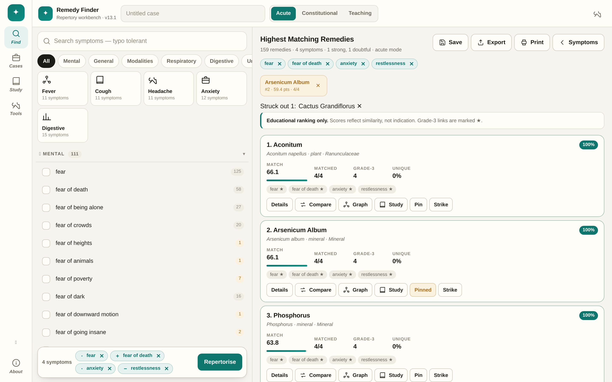

Pick the symptoms that are characteristic, watch the remedy ranking move, and read the source text behind every link. 178 remedies, 634 symptoms, 30,412 graded links from Repertorium Publicum (2008), plus public-domain materia medica quotations.

Symptoms on the left, ranking on the right — both visible at once on a laptop, one thumb away on a phone.
The number beside a symptom is how many remedies carry it. Rare symptoms do the discriminating; the interface tells you which are rare before you click.
Grade-3 links score higher than marginal ones, and you can mark any symptom strong (+) or doubtful (−). Matched, grade-3 and uniqueness counts sit on every card.
Every remedy carries a verbatim passage from Boericke (1906) or Allen (1916) where the text exists, labelled with book and year.
Save a repertorisation as a case, add dated follow-ups with remedy and potency, export Markdown, CSV, JSON or an Anki deck.
Push any remedy into an SRS deck, review with SM-2 scheduling, keep a streak, and see the month on a calendar.
Ten remedies side by side, shared-versus-unique comparison, a relationship graph, and a data audit that reports what it cannot verify.
Every link is traceable to a public source. Nothing is invented, and gaps are reported rather than hidden.
| Layer | Source | Scale |
|---|---|---|
| Rubric grades | Repertorium Publicum (2008), Vladimir Polony — GPL v3 | 74,480 rubrics |
| Symptom → remedy links | Mapped to this app's 634 symptoms by name, synonym and checked alias | 30,412 links |
| Materia medica text | Boericke 1906 · Allen 1916 · Kent 1904 · Clarke 1900 · Nash 1899 · Guernsey 1886 and others (public domain) | 132 quotations |
| Verification | Source attributions checked against 12 full texts in the dataset repository | 170 / 178 remedies |
Works on any device. On Android or desktop Chrome, choose “Install” to keep it offline with its own icon.
556 KB. Save it anywhere, double-click, done — including from a USB stick with no network.
Tagged releases attach the single-file build and a portable Windows launcher produced by CI.